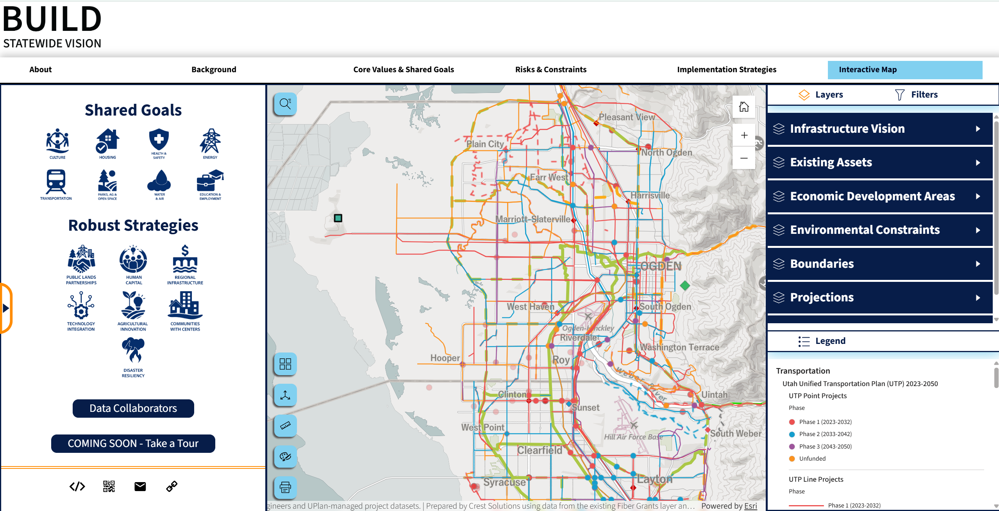

My Portfolio
Explore my work in cartography, spatial analysis, and interactive mapping.

BUILD: Utah’s Statewide Vision
I built this ArcGIS Experience Builder app to act as the website to host BUILD Statewide Vision for the Governor's Office. The BUILD Council created this long-range, strategic plan for the state of Utah. For the interactive map, I collected data from a broad range of stage agencies as well as community partners into a single web map. This map solves the problem of important planning data being spread across disparate web maps and datasets, making it difficult for planners, project managers, and decision makers to explore how their plans intersect. Not only for government and industry use, the general public can use the map to discover the projects planned for their area, and draw their own features on the map which can then be printed to share with legislators or others to better communicate their questions or concerns.